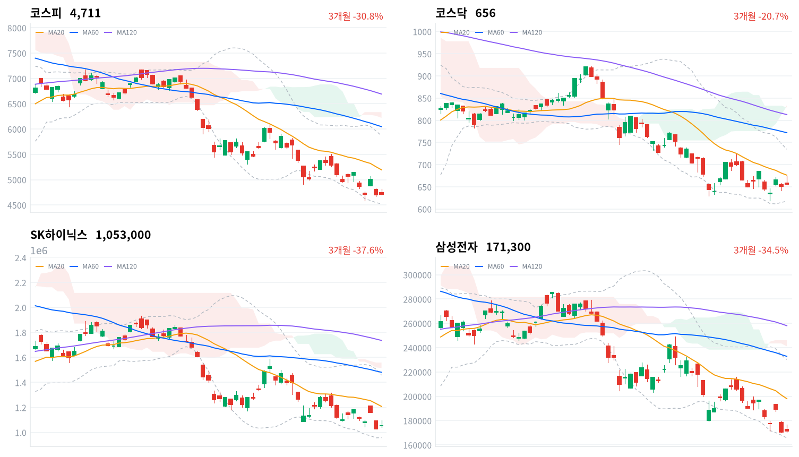

한국은행이 기준금리를 3.00%에서 3.25%로 올린 날, 코스피는 전날 급락 뒤 장중 4,817.77까지 반등했다가 0.29% 오른 4,711.21로 마감했다. 국고채 3년물은 3.9bp 오르는 데 그쳐, 채권시장은 인상을 대체로 예상된 일로 받아들였다.
반도체는 올랐지만(SK하이닉스 +2.23%) 자동차·항공이 내렸고, 외국인은 2거래일 연속 순매도했다(973억원, 당일 잠정). 하루 반등만으로 메모리 업황 할인이 걷혔다고 보기는 이르고, 가장 가까운 확인은 11월 27일 정규장의 외국인 수급이다.
한국은행은 기준금리를 연 3.00%에서 3.25%로 올리면서 6개월 뒤 금리 전망 중간값을 3.50%로, 내년 성장률 전망을 4.1%로 높였다. 그런데도 국고채 3년물은 3.9bp 오른 3.622%, 10년물은 2.9bp 오른 3.790%에 머물렀다. 주식은 전날 6.16% 급락 뒤 장 초반 4,817.77까지 반등했다가 상승폭 대부분을 내주고 4,711.21로 끝났다.
장 마감 뒤 보도는 금리 인상 이후 지수가 상승폭을 줄였다며 이날을 「금리 인상에 뒷심이 부족했던 하루」로 설명했다. 우리는 인상 자체가 이날 채권 가격을 크게 바꾼 새 정보는 아니었다고 본다. 3년물 금리는 새 기준금리보다 37bp, 금리 전망 중간값 3.50%보다도 12bp 높아 추가 인상 한 번은 이미 채권 가격에 들어 있었고, 결정 당일 3.9bp 상승은 그 기대를 확인한 정도다. 이 차이에는 기간프리미엄도 섞여 있어 전부를 정책 기대로 읽을 수는 없다. 결정 전 인상 확률을 보여 줄 설문이나 금리스왑 자료는 확보하지 못했고, 증권사 전망은 10월부터 11월과 내년 1분기 추가 인상에 무게를 둬 왔다는 보도가 있다. 주식에서도 하락 시점이 결정과 바로 이어지지 않는다. 지수는 오전에 밀린 뒤 오후에 한 차례 되올랐고, 마감 전 한 시간 반 동안 다시 내렸다.
시장이 금리 전망 중간값을 덜 믿고 있었을 가능성도 있다. 성장률 4.1%와 물가가 상당 기간 목표를 웃돈다는 신현송 총재의 전망이 추가 인상 시기를 앞당기는 쪽으로 기대를 바꾼다면 3년물은 앞으로 더 오른다. 이 차이는 11월 26일 국고채 3년물 3.622% 대비 12월 3일 3년물 금리로 확인한다. ±10bp 안(3.522~3.722%)이면 이미 반영됐다는 해석을 뒷받침하고, 3.722%를 넘으면 시장이 덜 반영했다는 설명을 우선 설명으로 보고 우리 해석을 철회한다. 3.522% 밑으로 내리면 성장 우려나 주가 급락 같은 다른 재료가 섞인 것으로 보고 어느 쪽으로도 판단하지 않는다. 주식 쪽에서 코스피가 아시아 4개 지수 평균보다 0.85%포인트 약했던 것은 한국에만 있던 금리 인상과도, 한국 자동차·항공 고유의 약세와도 부합해 이 차이만으로는 두 설명을 가리지 못한다. 자동차·항공 하락의 원인을 금리로 짚은 보도는 확인되지 않았다.
새로 제안할 상품은 없다. 한국 장이 미국 반도체·AI 하드웨어 테마에 보탠 정보는 전날 급락 뒤의 반등이 오래 버티지 못했다는 사실이다. SK하이닉스는 장중 상승폭의 상당 부분을 반납했고 외국인 매도도 멈추지 않아, 하루 반등만으로 메모리 업황 할인이 걷혔다고 보기는 이르다. 가장 가까운 결정적 일정은 11월 27일 정규장이다. 외국인 순매도가 멈추고 반도체가 이날 상승분을 지키는지를 기다린다.
코스피가 11월 26일 기준 일목 전환선 4,957 위에서 마감하면, 이날 반도체 반등을 급락 뒤 되돌림으로 본 판단을 철회한다. 하루 만에 전날 낙폭 대부분을 되찾는다는 뜻이고, 그만한 반등은 지수 비중이 큰 반도체가 먼저 크게 오르지 않고는 나오기 어려워 메모리 업황 할인이 걷히고 있다는 설명을 우선 설명으로 본다. 금리 쪽 판단은 위 3년물 범위로 따로 확인한다.
출처: 파이낸셜뉴스, 이투데이, 뉴스핌
직전 미국장(11월 25일)은 엇갈렸다. S&P 500이 0.25%, 나스닥이 0.62% 내렸고 다우는 0.33% 올랐다. 아시아에서는 대만가권이 2.50%, 항셍이 1.19%, 닛케이가 0.86% 올랐고 상해종합은 0.01% 오르는 데 그쳤다. 코스피 상승률은 네 지수 평균보다 0.85%포인트 낮았다.
코스피는 전일 종가 4,697.51보다 높은 4,745.10에서 출발했다. 한국 정규장 동안 미국 S&P 500 선물은 0.27%, 나스닥100 선물은 0.67% 올랐다. 다만 관측이 13시 30분에서 끊겨 장 마감까지의 흐름은 담지 못했다.
코스피는 장 초반 4,817.77까지 올랐지만 저가 4,704.65 바로 위인 4,711.21로 마감해, 하루 범위의 바닥 근처에서 끝났다. 코스닥도 673.57까지 올랐다가 저가 654.80 부근인 655.71로 마쳤다. 원/달러는 장 초반 고점에서 내려 1,340원대 초반에서 움직였다.
상승은 반도체가 받쳤고, 자동차·항공·은행이 그 일부를 깎았다. 외국인은 2거래일 연속 팔았고 기관이 샀다. 지수는 오전 금리 결정 뒤 12시 4,725까지 밀렸다가 14시 4,775로 되올랐고, 마지막 한 시간 반 동안 다시 4,711까지 내렸다. 금리 인상 이후 상승폭이 줄었다는 보도가 있지만, 오후 반등과 막판 하락은 결정 시점과 시차가 있어 금리 결정이 마감 약세를 만들었다고 보기는 어렵다. 시간외 거래 자료는 받지 못했다.
출처: 한국경제, 뉴스1, SBS
코스피는 0.29% 오른 4,711.21, 코스닥은 0.78% 오른 655.71로 마감했다. 코스피는 전날 6.16% 급락분 가운데 아주 일부만 되찾았고, 20일 이동평균 5,195보다 9% 넘게 낮은 곳에 있다. 코스닥 상승률이 코스피보다 0.49%포인트 높았다.
| 지수 | 종가 | 등락률 | 시가 | 고가 | 저가 | 전일 종가 |
|---|---|---|---|---|---|---|
| 코스피 | 4,711.21 | +0.29% | 4,745.10 | 4,817.77 | 4,704.65 | 4,697.51 |
| 코스닥 | 655.71 | +0.78% | 658.46 | 673.57 | 654.80 | 650.64 |
| 주체 | 순매수(억원) |
|---|---|
| 개인 | -10,645 |
| 외국인 | -973 |
| 기관 | +7,542 |
| 주체 | 순매수(억원) |
|---|---|
| 개인 | -1,399 |
| 외국인 | -1,065 |
| 기관 | +2,372 |
외국인 매도는 2거래일 연속 이어졌지만 규모가 크게 줄었다. 외국인은 코스피를 973억원 순매도했다(전일 1조8,193억원 순매도, 당일 잠정). 기관은 7,542억원을 순매수해(전일 39억원 순매수) 전날보다 매수를 크게 늘렸고, 개인은 1조645억원을 순매도해(전일 1조3,449억원 순매수) 하루 만에 파는 쪽으로 돌아섰다. 외국인 매도가 줄고 기관이 샀는데도 지수가 0.29% 오르는 데 그친 것은, 반도체 밖 대형주가 내린 몫이 컸다는 뜻이다. 업종별 순매매 자료가 없어 기관 매수가 반도체에 얼마나 들어갔는지는 가리지 못한다.
코스닥에서도 기관이 2,372억원을 사고(전일 281억원 순매수) 외국인이 1,065억원(전일 165억원 순매수), 개인이 1,399억원(전일 516억원 순매도)을 팔았다. 외국인이 두 시장에서 함께 판 날이라, 2거래일 연속 매도를 코스피 반도체만의 문제로 좁히기는 어렵다.
장중 누적 수급과 프로그램 매매는 받을 수 있는 자료가 없어 싣지 않는다.
| 순위 | 종목/ETF | 구분 | 거래대금 | 비고 |
|---|---|---|---|---|
| 1 | SK하이닉스 | 개별주 | 3.59조원 | - |
| 2 | 삼성전자 | 개별주 | 2.31조원 | - |
| 3 | 반도체 테마 ETF | 테마·롱 | 1.13조원 | 29종 합산 |
| 4 | 삼성전기 | 개별주 | 0.62조원 | - |
| 5 | 삼성전자우 | 개별주 | 0.45조원 | - |
| 6 | KODEX CD금리액티브(합성) | 단기금리·현금성 | 0.34조원 | - |
| 7 | SK스퀘어 | 개별주 | 0.33조원 | - |
| 8 | 삼성SDI | 개별주 | 0.21조원 | - |
| 9 | 2차전지 테마 ETF | 테마·롱 | 0.21조원 | 14종 합산 |
| 10 | KB금융 | 개별주 | 0.19조원 | - |
단위 백만원 원본을 조 단위로 환산했다. 같은 기초자산 ETF는 방향별로, 같은 테마 섹터 ETF는 테마별로 묶고 지수·해외 ETF는 제외했다.
거래는 다시 반도체에 몰렸고, 이번에는 주가도 그쪽으로 움직였다. SK하이닉스(3.59조원)와 삼성전자(2.31조원)가 1·2위, 반도체 테마 ETF 29종 합산(1.13조원)이 3위였고, 반도체와반도체장비 업종은 1.57% 올라 지수보다 강했다. 금리 인상 날 현금성 상품인 KODEX CD금리액티브는 0.34조원으로 6위였고, 은행주 가운데 KB금융(0.19조원)이 10위에 들었다. 상위 10에 인버스 상품은 없고, 레버리지 상품은 표의 두 테마 합산 안에 각각 두 종씩 들어 있다. 거래대금은 거래의 양이지 방향이 아니어서, 이 순위만으로 어느 쪽으로 돈이 들어왔는지는 말할 수 없다.
반도체는 올랐지만 상승의 폭은 반도체 밖 일부 업종이 더 넓었다. 반도체와반도체장비 업종은 175종목 가운데 78종목만 올라, SK하이닉스·삼성전자 위주의 좁은 상승이었다. 생명과학도구및서비스(+5.74%, 42종목 중 25종목 상승), 통신장비(+5.18%, 55종목 중 37종목), 방송과엔터테인먼트(+4.32%, 58종목 중 36종목)는 절반 넘는 종목이 함께 올랐다. 창업투자(+7.33%)는 상승률이 가장 컸지만 거래대금이 받치지 않은 개별 종목 상승이었다.
12개 섹터로 보면 증권(+1.98%)·반도체(+0.95%)·철강소재·헬스케어 4개만 오르고 8개가 내렸다. 자동차(-3.26%)가 가장 많이 내렸고 건설(-1.94%)·2차전지(-1.51%)·조선(-1.49%)이 뒤를 이었다. 지수가 오른 날이지만 대부분 섹터가 내려, 반등은 반도체 두 종목과 일부 중소형 업종에 국한됐다.
반도체는 전날 급락 뒤 반등해 지수를 받쳤다(SK하이닉스 +2.23%, 삼성전자 +0.35%). SK하이닉스는 장중 6.6%까지 올랐다가 상승폭을 줄였고, 전날 급락 뒤 저가매수가 들어왔다는 보도 외에 구체적인 호재는 확인되지 않았다. 메모리 업황을 의심하는 시각은 이날도 나왔다. 연합인포맥스에 따르면 SK하이닉스의 2026년 3분기 보고서에서 계약부채가 1년간 5천억원 수준에 머물러, 회사가 실적 안정성의 근거로 내세운 메모리 장기공급계약의 구속력에 의문이 제기됐다. 블룸버그를 인용해 BNP파리바가 삼성전자와 SK하이닉스의 2028년 이익이 컨센서스의 절반에도 못 미칠 것으로 봤다는 의견도 나왔다.
현대차는 3.90% 내려 지수를 가장 많이 끌어내린 종목 가운데 하나였다. 자동차 업종이 함께 약했다는 보도 외에 확인된 재료는 없다.
현대모비스는 5.72% 내렸다. 확인된 재료는 없다. 키움증권이 램프사업 매각 대금이 주식매수청구권·위로금 등으로 회사에 온전히 들어오기 어렵다고 진단했다는 보도는 있었지만, 그것이 이날 하락의 원인으로 확인된 것은 아니다.
대한항공은 6.16% 내렸다. 확인된 재료는 없다.
OCI홀딩스는 5.55% 올랐다. 장 초반 10%대까지 올랐다가 오후에 상승폭을 줄였고, 스페이스X의 우주 데이터센터 위성 승인에 따른 폴리실리콘 공급 기대와 미국의 탈중국 공급망 정책이 배경으로 꼽혔다는 보도가 나왔다.
출처: SBS, 재경일보, 파이낸셜뉴스, 비즈니스포스트, 와이드경제
금리 인상 날 국고채 금리는 단기물이 조금 더 올랐다. 3년물은 3.9bp 오른 3.622%, 10년물은 2.9bp 오른 3.790%였고 CD 91일물은 1.0bp 오른 3.40%였다. 원/달러는 한국장 시간대 마지막 관측이 1,342.88원(15:30)이었다.
| 지표 | 금리 | 전일比(bp) | 기준일 |
|---|---|---|---|
| 국고채 3년 | 3.622% | +3.9 | 2026-11-26 |
| 국고채 10년 | 3.790% | +2.9 | 2026-11-26 |
| CD 91일 | 3.40% | +1.0 | 2026-11-26 |
| 회사채 AA- 3년 | 4.294% | +2.8 | 2026-11-26 |
| 한국은행 기준금리 | 3.00% | 0.0 | 2026년 10월 기준 |
기준금리 행은 한국은행 통계의 10월 월값이다. 11월 26일 금통위의 3.25% 인상은 이 표에 아직 반영되지 않았다.
커브는 더 평평해졌다. 10년물과 3년물의 금리차는 16.8bp로 하루 새 1.0bp 좁혀졌고, 최근 2년(534거래일) 가운데 이보다 좁았던 날이 48일뿐이다. 성장률 전망이 크게 올라간 날에도 10년물이 3년물보다 덜 올라, 이날 금리 변화는 장기 성장 기대보다 단기 정책 경로에 몰렸다. 3년물과 인상 뒤 기준금리 3.25%의 차는 37.2bp, 금리 전망 중간값 3.50%와의 차는 12.2bp로, 3년물은 금리 전망 중간값보다도 위에 있다. 이 차이에는 기간프리미엄이 섞여 있어 인상 횟수로 바로 읽지는 않는다.
신용 가격은 인상에도 거의 변하지 않았다. 회사채 AA- 3년물과 국고채 3년물의 금리차는 67.2bp로 1.1bp 좁혀졌지만, 최근 2년(534거래일) 가운데 넓은 쪽 19% 안에 머물러 기업의 자금 조달 비용은 높은 상태 그대로다.
11월 26일 금리: 국고채 10년 3.790%, 3년 3.622%, 회사채 AA- 3년 4.294%. (3.790 − 3.622) × 100 = 16.8bp, 변화 2.9 − 3.9 = −1.0bp. (4.294 − 3.622) × 100 = 67.2bp, 변화 2.8 − 3.9 = −1.1bp. 인상 뒤 기준금리 3.25%와 금리 전망 중간값 3.50%는 보도 값: (3.622 − 3.25) × 100 = 37.2bp, (3.622 − 3.50) × 100 = 12.2bp.
| 미국 참조 지수 | 구분 | 관측 | 등락률 | 업종 내 상승 비율 | 기준일 |
|---|---|---|---|---|---|
| 반도체·AI 하드웨어 | 업종 | 반도체와반도체장비 | +1.57% | 45% | 11/26 |
| 반도체·AI 하드웨어 | 종목 | SK하이닉스 | +2.23% | – | 11/26 |
| 반도체·AI 하드웨어 | 종목 | 삼성전자 | +0.35% | – | 11/26 |
| 반도체·AI 하드웨어 | 지수 | 대만가권 | +2.50% | – | 11/26 |
| 전력망 | 업종 | 전기장비 | -0.21% | 34% | 11/26 |
| 전력망 | 종목 | HD현대일렉트릭 | +1.17% | – | 11/26 |
| 전력망 | 종목 | LS ELECTRIC | -0.79% | – | 11/26 |
| 전력망 | 종목 | 효성중공업 | +0.31% | – | 11/26 |
| 방산 | 업종 | 우주항공과국방 | +1.14% | 89% | 11/26 |
| 방산 | 종목 | 한화에어로스페이스 | -0.95% | – | 11/26 |
| 방산 | 종목 | LIG디펜스앤에어로스페이스 | +0.78% | – | 11/26 |
| 산업재 | 업종 | 기계 | +1.07% | 55% | 11/26 |
| 산업재 | 종목 | HD현대중공업 | -2.05% | – | 11/26 |
| 산업재 | 종목 | 삼성중공업 | -1.84% | – | 11/26 |
| 금속·광업 | 업종 | 비철금속 | +0.87% | 50% | 11/26 |
| 금속·광업 | 종목 | POSCO홀딩스 | -1.19% | – | 11/26 |
| 금융 | 업종 | 증권 | +1.85% | 62% | 11/26 |
| 금융 | 종목 | KB금융 | -1.89% | – | 11/26 |
| 금융 | 종목 | 신한지주 | -0.47% | – | 11/26 |
| 소프트웨어 | 업종 | 소프트웨어 | +0.37% | 51% | 11/26 |
| 소프트웨어 | 종목 | NAVER | +0.75% | – | 11/26 |
| 에너지 | 업종 | 석유와가스 | +1.50% | 63% | 11/26 |
| 에너지 | 종목 | SK이노베이션 | +3.22% | – | 11/26 |
| 일본 | 지수 | 닛케이 | +0.86% | – | 11/26 |
| 중국 | 지수 | 항셍 | +1.19% | – | 11/26 |
| 중국 | 지수 | 상해종합 | +0.01% | – | 11/26 |
원/달러는 한국장 시간대 1,345.28원(09:00)에서 1,338.98원(11:00)까지 내렸다가 1,342.88원(15:30)에서 마지막으로 관측됐다. 기준금리 인상이 원화를 장중 범위 밖으로 밀어내지 않아, 해외주식을 원화로 환산한 가치에 이날 금리 결정이 준 영향은 작았다. 원화 대기 자금의 참고 금리는 CD 91일물이 이미 새 기준금리보다 높은 수준이어서, 인상의 몫은 결정 전부터 대부분 들어와 있었다.
반도체는 한국과 대만이 같은 방향으로 반등했지만 한국 안에서는 두 종목이 갈렸다. 대만가권이 2.50% 오르는 동안 SK하이닉스는 2.23% 올라 비슷했고, 삼성전자는 0.35%에 그쳤다. 이날 아시아 장이 미국 반도체·AI 하드웨어 테마에 보탠 정보는 전날 급락의 되돌림이 대만과 한국 메모리에서 함께 나왔다는 사실까지이고, 직전 미국장에서 나스닥이 내린 뒤의 반응이라 미국 장의 방향을 앞서 보여 준다고 읽을 근거는 없다.
금통위는 11월 26일 기준금리를 연 3.00%에서 3.25%로 0.25%포인트 올렸다. 7·8월에 이어 올해 세 번째 인상이고, 7명 가운데 황건일·이수형 위원이 동결 의견을 냈다. 6개월 뒤 금리 전망 중간값은 3.50%(8월 3.25%)로 높아졌고, 성장률 전망은 올해 3.3%에서 3.9%로, 내년 2.9%에서 4.1%로 올라갔다는 보도가 나왔다. 신현송 총재는 이번 인상을 가시화된 물가 압력에 대한 선제 대응으로 설명했고, 고유가가 길어져 물가가 상당 기간 목표를 웃돌 것으로 봤다. 금리 전망 중간값은 「보이는 그대로 해석하면 된다」고 했고, 추가 인상 시기는 성장·물가 경로를 보고 정한다고 밝혔다.
인상은 두 방향으로 주식에 닿는다. 원화 단기 금리가 오르면 차입이 많은 기업의 이자 부담과 주식 할인율이 함께 오르고, 높아진 성장 전망은 수출·설비투자 업종의 이익 전망을 받친다. 이날 가격은 어느 쪽도 뚜렷이 확인해 주지 않았다. 자동차·항공이 약했지만 그 원인을 금리로 짚은 보도는 확인되지 않았고, 은행은 순이자마진 개선 논리에도 KB금융이 1.89% 내렸다. 민간소비 전망은 1.8%로 낮췄다는 보도도 있어, 성장 전망 상향은 소비보다 수출 쪽에 기댄 것으로 읽힌다. 언론에서는 내년 5월까지 추가 인상 의견이 우세하다는 보도가 나왔다. 다음 금통위 일정과 의사록 공개일은 확인하지 못했다.
이재명 대통령은 11월 26일 수석보좌관회의에서 소형모듈원자로·핵융합·재생에너지·양자기술·우주항공·첨단바이오·첨단공급망 7대 시드 프로젝트의 속도를 주문했다. 재정지원을 보조금 중심에서 정부가 직접 지분투자자로 참여하는 성과공유형으로 바꾸는 방안이 논의됐고, 반도체 호황이 2~3년 안에 정점을 지날 수 있다는 판단 아래 다음 성장동력을 찾는 취지라는 보도가 나왔다.
정부가 지분으로 들어오면 해당 분야 기업의 자본 조달 여건이 달라질 수 있지만, 예산 규모와 대상 기업이 정해지지 않아 이익 전망에 닿는 단계는 아니다. 이날 우주항공과국방 업종이 37종목 중 33종목 오르며 1.14% 상승했지만, 이 발표와 이어진 가격 반응인지는 확인되지 않았다. 사업별 예산과 지분투자 대상 발표가 다음 분기점이고, 일정은 미확정이다.
미국 무역대표부는 11월 25일(현지) 중국 과잉생산에 최대 20%의 관세를 제안했고, 1월 10일 미·중 무역 휴전이 끝날 때까지 합의하지 못하면 40%를 부과하겠다고 밝혔다는 보도가 나왔다. 14개 경제권 조사 결과도 함께 발표됐다. 중국산과 경쟁하는 품목의 미국 시장 점유가 넓어질 수 있다는 점에서, 비중국 공급망에 속한 폴리실리콘·태양광 소재가 수혜 논리로 거론된다. 시장 일각에서는 미국이 한국의 과잉생산에 15% 관세를 예고하며 그 근거로 호남 반도체 클러스터를 든 것이라는 시각도 있었다. 한국이 14개 경제권 조사 결과에서 어떻게 다뤄졌는지는 독립적으로 확인하지 못했다. 다음 분기점은 2027년 1월 10일 휴전 만료다.
증권시장안정펀드 확대, 삼성전자 중국 출하 허가, 중국 당국의 한국 콘텐츠·공연 승인은 이날 새 소식이 확인되지 않았다. 키움증권 한지영 연구원은 증안펀드 출자약정 확대와 공매도 금지 여부가 투자심리 회복의 열쇠가 될 수 있다고 진단했다. 출자약정 규모와 집행 시점은 일정 미확정이다.
출처: 이투데이, 뉴스핌, 인포스탁데일리, 세계일보, 한국일보, 이데일리, 연합뉴스, 뉴시스, 와이드경제
11월 25일 판단은 유효하다. 코스피는 4,711.21로 마감해 11월 25일 기준 일목 전환선 5,046 위로 올라서지 못했으므로, 전날 반도체 급락을 메모리 업황 할인이 다시 붙은 것으로 본 판단을 미리 정한 조건대로 유지한다. 기다린 조건은 외국인 순매도가 이어질 때 반도체 밖 업종도 함께 내리는지였다. 외국인 순매도는 이어졌지만 반도체는 오르고 자동차·항공이 내려, 업황 할인 해석도 시장 전반의 위험 축소 설명도 뒷받침하지 않았다. 사전에 정한 기간 검증인 12월 2일 종가 기준 SK하이닉스와 코스피의 수익률 차(11월 25일 대비 ±3%포인트)는 이날 중간값이 +1.94%포인트로 기준 안에 있고, 판정은 12월 2일 종가로 한다.
| 판단(세운 날) | 오늘 결과 | 상태 |
|---|---|---|
| 한은 추가 인상, 3년물에 이미 반영(11월 26일) | 국고채 3년 3.622%(+3.9bp) | 새로 세움 — 12월 3일 금리 |
| 반도체 급락은 메모리 업황 할인 재개(11월 25일) | SK하이닉스−코스피 +1.94%포인트 | 판단 보류 — 12월 2일 종가 |
| 코스피 반등은 하루 안도 반등(11월 24일) | 11월 24일 대비 코스피 -5.89% | 판단 보류 — 12월 1일 종가 |
| 삼성전자 약세는 중국 출하 이익 경로(11월 20일) | 삼성전자−SK하이닉스 -1.05%포인트 | 판단 보류 — 11월 27일 종가 |
| 건설주 급락은 데이터센터 할인(11월 23일) | 현대건설 종가 미수집 | 판단 보류 — 11월 30일 종가 |
| 한한령 수혜주 급등은 하루 기대 매수(11월 19일) | 하이브−코스피 +6.35%포인트 | 철회 — 11월 26일 종가로 종료 |
금리 인상 반영 판단(11월 26일)은 오늘 세웠다. 11월 26일 국고채 3년물 3.622% 대비 12월 3일 3년물이 ±10bp 안(3.522~3.722%)이면 추가 인상이 이미 반영됐다는 해석을 뒷받침하고, 3.722%를 넘으면 시장이 덜 반영했다는 설명을 우선 설명으로 보고 철회한다. 3.522% 밑으로 내리면 다른 재료가 섞인 것으로 보고 어느 쪽으로도 판단하지 않고 닫는다. 그사이 총재나 금통위원이 추가 인상 시기를 언급하면 함께 적어 둔다.
한한령 수혜주 판단(11월 19일)은 오늘 판정일을 맞아, 하루 기대 매수였다는 해석을 철회한다. 하이브는 11월 19일 189,400원에서 185,700원으로 1.95% 내렸지만 같은 기간 코스피가 8.30% 내려 차가 +6.35%포인트로, 미리 정한 이익 재평가 쪽 기준(+3%포인트)을 넘었다. 다만 그사이 중국 당국의 한국 공연·콘텐츠 승인 공지는 확인되지 않았고, 상대 강세는 반도체가 이끈 지수 급락 속에 화장품·엔터테인먼트처럼 반도체 밖 업종이 버틴 흐름과 겹친다. 방향은 이익 재평가 쪽으로 나왔지만, 그것이 원인이었는지는 가격만으로 확인하지 못한 채 닫는다.
코스피 안도 반등 판단(11월 24일)은 중간값이 하루 안도 반등 쪽 기준(-3%) 밖에 있지만 판정은 12월 1일 종가로 한다. 삼성전자 중국 출하 판단(11월 20일)은 차가 기준(±3%포인트) 안이고 출하 허가 보도는 없다. 건설주 판단(11월 23일)은 현대건설 종가가 수집되지 않아 중간값을 계산하지 못했고, 데이터센터 수주 취소·지연 공시는 확인되지 않았다.
수익률 = (11월 26일 종가 ÷ 기준 종가 − 1) × 100. SK하이닉스 1,030,000원 → 1,053,000원 +2.23%, 코스피 4,697.51 → 4,711.21 +0.29%, 차 +1.94%포인트. 코스피 5,006.03 → 4,711.21 −5.89%. 삼성전자 183,100원 → 171,300원 −6.44%, SK하이닉스 1,113,000원 → 1,053,000원 −5.39%, 차 −1.05%포인트. 하이브 189,400원 → 185,700원 −1.95%, 코스피 5,137.89 → 4,711.21 −8.30%, 차 +6.35%포인트.
| 시점 | 확인할 것 | 가르는 판단 |
|---|---|---|
| 11월 27일 종가 | 삼성전자−SK하이닉스 수익률 차(11월 20일 대비) | 종목 고유 이익 경로인가, 전반 위험 축소인가 |
| 11월 27일 정규장 | 외국인 순매도 지속, 반도체 상승분 유지 | 반도체 반등이 되돌림에 그치나 |
| 11월 30일 종가 | 현대건설−코스피 수익률 차(11월 23일 대비) | 데이터센터 할인인가, 하루 위험 축소인가 |
| 12월 1일 종가 | 코스피 수익률(11월 24일 대비 ±3%) | 하루 안도 반등인가, 재평가 시작인가 |
| 12월 2일 종가 | SK하이닉스−코스피 수익률 차(11월 25일 대비 ±3%포인트) | 메모리 업황 할인인가, 시장 전반 위험 축소인가 |
| 12월 3일 | 국고채 3년 3.522~3.722% 안인가(11월 26일 대비) | 추가 인상 이미 반영인가, 덜 반영인가 |
다음 금통위와 의사록 공개, 정부 7대 시드 프로젝트 예산, 증권시장안정펀드 확대 규모, 삼성전자 중국 출하 허가는 일정 미확정이다.

최근 3개월 일봉에 20·60·120일 이동평균, 볼린저 밴드, 일목 구름대를 겹쳤다. 상승은 녹색, 하락은 적색이다.
| 자산 | 위치(이평·구름) | 가까운 저항 | 가까운 지지 |
|---|---|---|---|
| 코스피 | 전환선 아래, 세 이동평균·구름 아래(역배열) | 전환선 4,957 | 20일 저점 4,587 → 볼린저 하단 4,522 |
| 코스닥 | 전환선 아래, 세 이동평균·구름 아래(역배열) | 전환선 664 → 20일선 676 | 20일 저점 619 → 볼린저 하단 618 |
| SK하이닉스 | 전환선 아래, 세 이동평균·구름 아래(역배열) | 전환선 112만원 | 20일 저점 103만원 → 볼린저 하단 96만원 |
| 삼성전자 | 세 이동평균·구름 아래(역배열) | 없음 | 20일 저점 17만원 → 볼린저 하단 16만6천원 |
코스피는 장중 4,800선을 넘었다가 내려와, 11월 26일 기준 전환선 4,957과 세 이동평균·구름 아래의 역배열을 그대로 이어 갔다. 종가로 전환선을 넘으면 위쪽 10% 안에 다른 저항이 없고, 아래로는 20일 저점 4,587과 볼린저 하단 4,522가 가장 가까운 지지다.
위 레벨은 이동평균·볼린저밴드·일목균형표와 스윙 고저를 11월 26일 종가로 기계적으로 계산한 값이며 투자 권유가 아니다. 종가에서 10% 넘게 떨어진 레벨은 싣지 않았다.